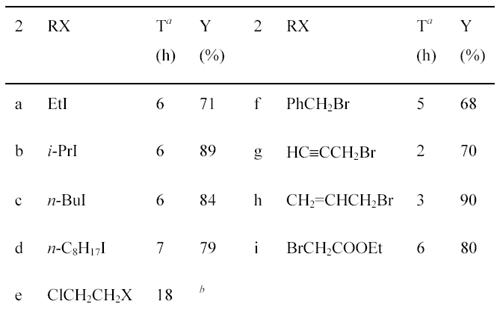

Preparation of 2-Alkoxy-5-methoxybenzaldehydes and 2-Ethoxy-5-alkoxybenzaldehydesby Alan R. Katritzky, Qiuhe Long, Hai-Ying He, Guofang Qiua and Allan L. WilcoxArkivoc Vol. 1, Part 6, ms 0081 (2000) [ Back to the Chemistry Archive ]
IntroductionDialkoxybenzaldehydes are useful and important precursors for the pharmaceutical industry and for organic synthesis in general. We have recently reported the preparation of three symmetrical 2,5-dialkoxy- benzaldehydes (R = CH3CH2-, PhCH2- and HCCCH2-) via the formylation of 1,4-diethoxybenzene with hexamethylenetetramine (HMTA) and the alkylation of 2,5-dihydroxy-benzaldehyde with benzyl bromide or with 3-bromo-1-propyne [1]. These two general methods, i.e., the formylation of dialkoxybenzenes with HMTA [2]. and the alkylation of dihydroxy-benzaldehydes with alkyl halides [3], are widely used for the preparation of symmetrical dialkoxybenzaldehydes. However, they are not suitable for the synthesis of unsymmetrical dialkoxybenzaldehydes due to the poor regioselectivity of the formylation or alkylation. To our knowledge, there are only three reports of the preparation of unsymmetrical 2,5-dialkoxybenzaldehydes: 2-ethoxy-5-methoxybenzaldehyde (2a) was prepared by the reaction of 2-hydroxy-5-methoxybenzaldehyde (1) with diethyl sulfate; [4] 2-benzyloxy-5-methoxy-benza-ldehyde (2f) was prepared in 50% yield by the O-alkylation of 1 with benzyl chloride in the presence of sodium hydride;[5]. while 2-(2-propenyloxy)- 5-methoxybenzaldehyde (2h) was prepared in 93% yield by the O-alkylation of 1 with allyl bromide in the presence of sodium hydroxide and catalytic amount of benzyltributylammonium chloride [6]. We now describe the preparation of 2-alkoxy-5-methoxybenzaldehydes and 2-ethoxy-5-alkoxybenzaldehydes from commercially available 2-hydroxy-5-methoxybenzaldehyde (1) and 2-ethoxy-5-bromo-benzaldehyde (3), respectively. Results and DiscussionPreparation of 2-Alkoxy-5-methoxybenzaldehydes 2a-i from 2-Hydroxy-5-methoxy-benzaldehyde (1). Synthesis of 2-alkoxy-5-methoxybenzaldehydes 2a-i proceeded in good to excellent yields by the direct alkylation of 2-hydroxy-5-methoxybenzaldehyde (1) in refluxing acetone with excess alkyl halides in the presence of anhydrous potassium carbonate (Scheme 1). The reaction time was monitored by gas chromatography. Aliphatic alkyl iodides were used for the preparation of 2a-d; while activated alkyl bromides were used for 2f-i. It also shows that the alkylation of 1 with activated alkyl bromides takes place more easily with shorter reaction time than aliphatic alkyl iodides. As for 2-(2-chloroethoxy)-5-methoxy-benzaldehyde (2e), both 1-chloro-2-bromoethane and 1-chloro-2-iodoethane were used and 2e was obtained in 41% and 55% yield, respectively. Using this method, nine unsymmetrical 2,5-dialkoxybenzaldehydes, including six novel compounds, were readily prepared. Scheme 1 (a) Reaction times were decided by monitoring with the appearance of products by GC.
Preparation of 2-Ethoxy-5-alkoxybenzaldehydes from 2-Ethoxy-5-bromobenzaldehyde Considering the possible transformation of bromo to alkoxy or hydroxy group, 2-ethoxy-5-bromobenzaldehyde (3) was used as a starting material to prepare unsymmetrical 2,5-dialkoxybenzaldehydes. Although phenyl tert-butyl ether was reported to be obtained in 42-46% yield by the reaction of bromobenzene and potassium tert-butoxide, [7]. we found that the treatment of 3 with potassium tert-butoxide removed the formyl group. In addition, potassium alkoxides are difficult to prepare due to their easy oxidation. In 1969, Bacon et al., reported the conversion of halogen to alkoxy groups by the reaction of aryl halides with sodium alkoxides, using copper(I) salts as catalysts [8]. However, our efforts to synthesize 2-ethoxy-5-iso- propoxybenzaldehyde by the treatment of 3 with CuI and i-(CH3)2CHONa failed. The reason for this is that aryl halides are relatively inert to nucleophilic substitution unless the halogen atom is activated by the presence of electron withdrawing groups [9]. In 1983, Sinhababu and Borchardt [10]. reported the preparation of hydroxybenzaldehydes via a one pot reaction of bromobenzaldehydes with n-BuLi, morpholine and nitrobenzene. The first molar equivalent of n-BuLi, together with morpholine, is believed to protect the formyl group by generating morpholinoalkoxide as a tetrahedral intermediate; while the second molar equivalent of n-BuLi is used to exchange the bromo group. Thus, the reaction consumes two molar equivalents of n-BuLi. The method did afford the expected intermediate 2-ethoxy-5-hydroxybenzaldehyde (4) in moderate yield (51%). The structure of 4 was confirmed by 1H and 13C NMR spectra and high-resolution mass spectrum. The alkylation of 4 with two equivalents of 3-bromoprop- 1-yne or benzyl bromide in the presence of potassium carbonate gave 2-ethoxy-5-(2-propynyloxy)- benzaldehyde (5a) or 2-ethoxy-5-benzyloxybenzaldehyde (5b) in 75% and 72% yield, respectively (Scheme 2). Scheme 2In summary, 2-alkoxy-5-methoxybenzaldehydes 2a-i were obtained in high yields by the O-alkylation of 2-hydroxy-5-methoxybenzaldehyde (1) with alkyl bromides or iodides; 2-ethoxy-5-alkoxybenzaldehydes 5a-b were afforded in moderate total yields from the O-alkylation of 2-ethoxy-5-hydroxybenzaldehyde (4), which was prepared by the treatment of 2-ethoxy-5-bromobenzaldehydes (3) with n-BuLi, morpholine and nitrobenzene. Experimental SectionGeneral procedure for the preparation of 2-alkoxy-5-methoxybenzaldehydes from 2-hydroxy-5-methoxybenzaldehyde (1). The mixture of 2-hydroxy-5-methoxy-benzaldehyde (1) (1.52 g 10 mmol), an appropriate alkyl halide (25 mmol) and K2CO3 (4.5 g, anhydrous) in acetone (40 mL) was heated to reflux. The reaction time (c.f. Scheme 1) was monitored by gas chromatography with appearance of the product. The cooled mixture was poured into water and extracted with EtOAc (3 x 50 mL). The combined extracts were washed with water and dried over Na2SO4. After removal of the solvent in vacuo, the residue was separated by column chromatography with hexane/EtOAc (from 3:1 to 6:1) as eluent to give the expected product 2a-i.
Procedure for the preparation of 2-ethoxy-5-hydroxybenzaldehyde (4).To a stirred solution of morpholine (1.05 g, 12 mmol) in dry THF (20 mL) at -50°C, was added n-BuLi (1.5 M, 8 mL, 12 mmol). After 5 min, a solution of the 5-bromo-2-ethoxybenzaldehyde (2.29 g, 10 mmol) in THF (15 mL) was injected over a period of 5 min and the mixture was allowed to cool to -78 °C over 15 min. n-BuLi (1.5 M, 10.7 mL, 16 mmol) was then added dropwise, keeping the temperature at -78°C. After 35 min, a solution of PhNO2 (3.45 g, 28 mmol) in THF (5 mL) was added. The dark mixture was stirred at -78 °C for 4 h and then allowed to warm to room temperature. The mixture was acidified to pH » 1 with 6 M HCl and stirred for 15 min. After dilution with brine, the organic layer was collected, and the aqueous layer was extracted with ether (2 x 30 mL). The combined organic layers were extracted with 2 M NaOH (3 x 10 mL). The combined NaOH extracts were washed with ether (2 x 10 mL) and then acidified to pH 1 with concentrated HCl. The resulting mixture was extracted with CH2Cl2 (3 x 20 mL), and combined organic extracts were washed with water and dried over anhyd Na2SO4. Evaporation of the solvent gave a solid which was purified by column chromatography (hexanes:AcOEt = 2:1) to give 2-ethoxy-5-hydroxybenzaldehyde (4, 0.85 g, 51%). Yellow crystal; mp 95-96°C. General procedure for the preparation of 2-ethoxy-5-alkoxybenzaldehydes 5a-b. A mixture of 2-ethoxy-5-hydroxybenzaldehyde (10 mmol), propargyl bromide or benzyl bromide (20 mmol) and K2CO3 (4.5 g, anhydrous) in acetone (50 mL) was reflux for 1.5 h. The cooled mixture was poured into water (60 mL) and extracted with EtOAc (2 x 30 mL). The combined extract was washed with water, dried over anhyd Na2SO4. Evaporation of the solvents gave a solid which was purified by column chromatography (hexanes:EtOAc = 7:1) to give pure product 5a-b.
References and Notes
|